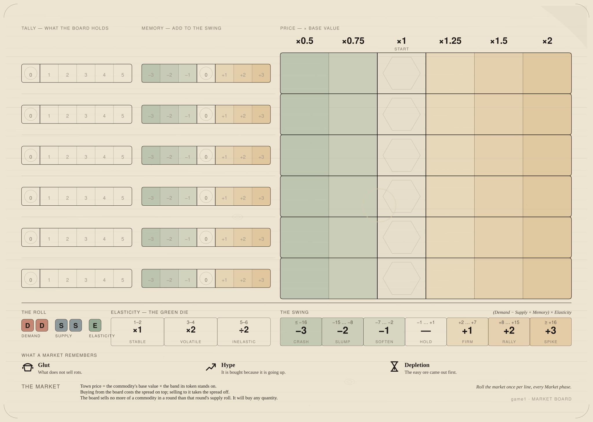
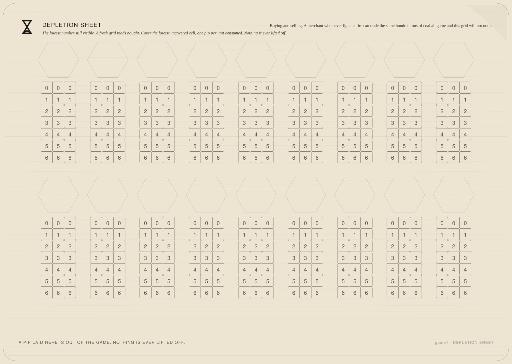

One sheet, and it holds no state at all. The roll across the head - what each die is and what it does - and four panels under it, one for each kind of good there is.
Nothing on this board names a commodity, a town or a player, and now nothing on it is a place to put a piece either. It is a rule, printed. One sheet serves any table and any number of them.
Generated by tools/build-market.mjs from data/marketboard.json,
data/components.json, the bands in data/rules.json and the pricing system in
data/pricing.json — edit those, re-run the tool, and never these files. The price itself is
not here: it is on the price ledger.


| Net | Cell | Steps |
|---|---|---|
| ≤ −9 | Crash | −3 |
| −8 … −5 | Slump | −2 |
| −4 … −2 | Soften | −1 |
| −1 … +1 | Hold | — |
| +2 … +4 | Firm | +1 |
| +5 … +8 | Rally | +2 |
| ≥ +9 | Spike | +3 |
Every roll of two blue against two red, at every face of the green, with no modifier —
7,776 of them,
counted rather than claimed. pricing.ruler.odds states what the bins were cut for; this is
what they do.
| Steps | Derived | Stated |
|---|---|---|
| −3 | 1.0% | |
| −2 | 11.1% | |
| −1 | 22.9% | |
| — | 29.9% | stated 29.9% |
| +1 | 22.9% | 45.8% either way · stated 45.8% |
| +2 | 11.1% | 22.2% either way · stated 22.2% |
| +3 | 1.0% | 2.1% either way · stated 2.1% |
Most of what is bought and sold, in this game and everywhere else. Stone, lumber, cloth, rope, ale. It keeps, it is not running out, and nobody wants it for what owning it says about them - so its price is the crowd wanting it against the amount that turned up, and there is no story underneath.
34: Logs, Stone, Water, Charcoal, Lumber, Brick, Glass, Rope, Leather, Ironware, Parchment, Wool, Flax, Cotton, Yarn, Cloth, Hide, Grain, Flour, Salted Meat, Cheese, Honey, Hops, Ale, Sheep, Cattle, Pig, Chickens, Barrel, Crate, Sack, Arcane Herb, Ember Root, Frost Lichen.
The oldest problem in any market that grows things. The stuff turns up whether anybody wants it or not, it keeps badly, and what is still in the warehouse when the season turns is not an asset, it is a smell. A good harvest is a bad year, and it is a bad year for the person holding the harvest rather than for the market.
11: Bread, Vegetables, Mushrooms, Berries, Apples, Fish, Meat, Milk, Eggs, Grapes, Moon Blossom.
The rule for anything that comes out of a hole. The first seam is at the surface and the last one is under water at the bottom of a shaft, so every ton that leaves makes the next ton dearer to win - and none of it grows back inside a lifetime. A mining town's prices only ever go one way, and the boom is the part before everybody notices.
14: Clay, Sand, Iron Ore, Copper Ore, Gold Ore, Salt, Coal, Peat, Crude Oil, Pig Iron, Steel, Copper, Gems, Mana Crystal.
The market that runs on its own reputation. Nobody needs a jewel, a bolt of fine cloth or a famous horse - they want it because of what owning it says, and what it says is loudest when everybody can see the price climbing. So a rise makes buyers and buyers make a rise, until the day it does not and the whole thing runs the other way just as fast.
7: Gold, Fine Cloth, Mead, Wine, Horse, Spices, Jewellery.
Six steps of one, three cells to a step, plus a row of noughts to start on: seven rows of three, twenty-one cells, and the twenty-first unit burnt is the one that puts the price up by six for the rest of the game. `step` is what a row is worth, `per` is how many cells a row holds, `top` is the last row - and the grid is drawn from those three numbers, so making a seam last longer is one number here and a taller grid everywhere.
A grid is 3 cells by 7 rows — 21 pips to work a seam out for good — and 18 of them fit a sheet against the 14 commodities that need one.